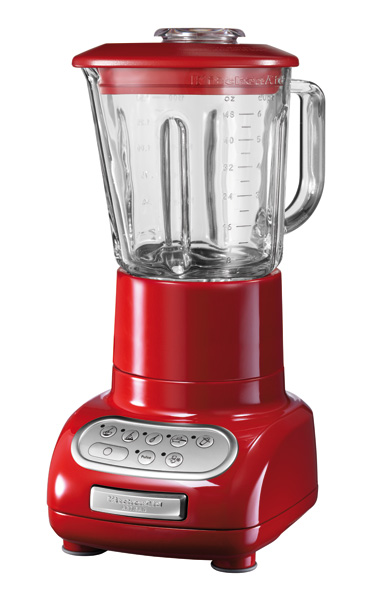

Блендер BORK B780 VS KitchenAid 5KSB5553
Современная техника отличается от ретро тем, что экономит самое ценное на сегодняшний день – время. Ретро дизайн - это на любителя, а вот ретро технологии это вчерашний, а быть может и позавчерашний день.
KitchenAid 5KSB5553
Преимущества KitchenAid, которые пытаются продать:
- Дизайн и выбор цветов
- Страна производства США
- Срок гарантии 3 года
- Международная компания существует с 1919 года
- KitchenAid переводится как кухонный помощник
Характеристики KitchenAid:
- Потребляемая мощность: 500 Вт
- Объём чаши: 1,5 л
- Вес: 4,5 кг
- 6 скоростей + режим Pulse
- Ножи съёмные, количество лезвий: 4 шт
- Скорость вращения насадки: 4000 – 11500 об/мин
- Тип управления псевдосенсер
- Материал чаши стекло
Преимущества блендера BORK B780:
- Инновационный DC двигатель на подвеске имеет низкий уровень шума, что позволяет использовать блендер в любое время суток
- Компактные габариты. Блендер, которому найдётся место на любой кухне
- Чаша, выполненная из боросиликатного стекла имеет форму клевера, что обеспечивает идеальное перемешивание ингредиентов по всему объёму чаши
- Запатентованная форма шести лезвий, которые работают как перевёрнутое крыло самолёта, затягивая продукт, обеспечивает быстрое и равномерное измельчение продуктов
- Скорость вращения ножей 25000 оборотов в минуту обеспечивает тонкую, однородную текстуру обрабатываемых ингредиентов
- Снятие ножей в пол-оборота упрощает процесс ухода за блендером
- Производство Швейцария
- Реальная цена отличного продукта
Покупая KitchenAid, вы покупаете не только ретро дизайн, но и ретро технологии.